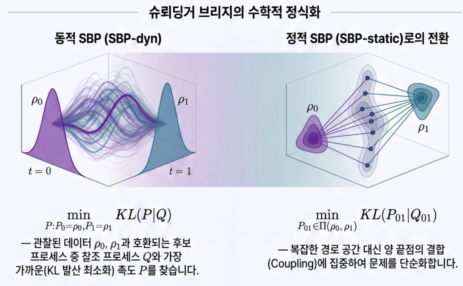
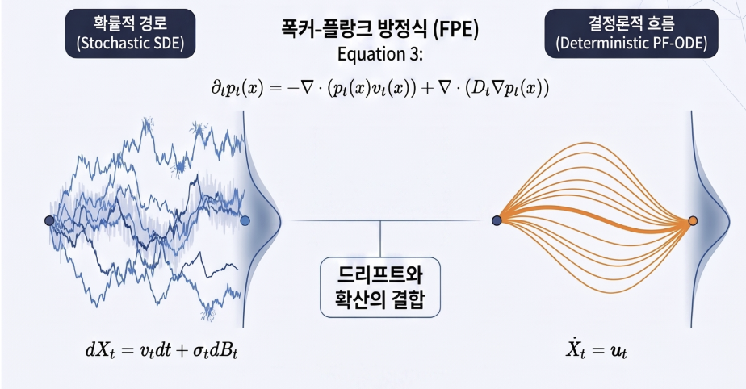

mvOU Schrödinger bridge
2.1 Schrodinger bridge

2.2 FP-ODE

- Score로 ODE만으로 SDE의 확률 분포를 구사
Reference process (latent space에서 노이즈 있는 dynamics):
\[ dX_t = A(X_t - m)\,dt + \sigma\,dB_t \]
- \(A\): drift 행렬 (v3는 cell line별로 다름)
- \(m = 0\) (v3 합의)
- \(\sigma = 0.5\) (v2.3 그대로)
- \(A = 0\)이면 v2.3 Brownian으로 복귀
Moment 두 개를 닫힌 형태로
Forward marginal과 bridge marginal을 만드는 핵심 두 개:
\[ \exp(A\tau),\qquad \Sigma(\tau) := \int_0^\tau e^{As}\,\sigma^2 I\,e^{A^\top s}\,ds \]
구현: \(A = V \cdot \mathrm{diag}(\lambda) \cdot V^{-1}\) eigendecomp으로 분해. \(\mathrm{Re}(\lambda) \le 0\)이라 안정 (Cook2020 fit 전부 통과).
✏️ forward marginal → \(x_0\)만 알고 시간 t 후 어디 있을지 → 시간이 갈수록 분포가 퍼지면서 gaussian이 넓어짐Bridge marginal → \(x_0\) 와 \(x_t\) 를 둘다 알고 중간 시점 t의 분포
Brownian (v2.3): mvOU (v3): x_T x_T ● ● │ ↗ │ z (sample) z │ ↓ ↘ │ ↖ ● ● x_0 x_0 평균 path: 직선 평균 path: A의 회전 방향으로 curve Σ_b: isotropic (구형) Σ_b: 회전축 방향으로 anisotropic (타원)
Bridge marginal
\(X(0) = x_0\), \(X(T) = x_T\)로 conditioning하면, 중간 시점 \(z \sim \mathcal{N}(\mu_b(t), \Sigma_b(t))\):
\[ \mu_b(t) = e^{At}\,x_0 + \Sigma(t)\,e^{A^\top(T-t)}\,\Sigma(T)^{-1}\bigl(x_T - e^{AT}x_0\bigr) \]
\[ \Sigma_b(t) = \Sigma(t) - \Sigma(t)\,e^{A^\top(T-t)}\,\Sigma(T)^{-1}\,e^{A(T-t)}\,\Sigma(t) \]
Doob drift
이 z의 흐름이 따라야 할 방향:
\[ u_t(z) = A\,z + \sigma^2\,e^{A^\top(T-t)}\,\Sigma(T-t)^{-1}\bigl(x_T - e^{A(T-t)}\,z\bigr) \]
Brownian 극한 (\(A=0\)): \(u_t = (x_T - z)/(T-t)\), \(\Sigma_b = \sigma^2 \cdot t(T-t)/T \cdot I\).
2. 핵심 개념
(1) Schrödinger bridge
두 끝 분포 \(p_0, p_T\)가 주어졌을 때, reference SDE에 가장 가까운 (KL divergence 면에서) path measure를 찾는 문제.
- v2.3: reference = Brownian motion → path가 직선적으로 분포를 가로지름
- v3: reference = mvOU → path가 회전·non-equilibrium dynamics를 따라 이동
이 bridge의 path와 marginal은 closed form이 있고, 그게 학습 target.
(2) Stein score
분포 \(p(x)\)의 로그 밀도의 gradient:
\[ s(x) := \nabla_x \log p(x) \]
- "이 점에서 어느 방향으로 가야 밀도가 높아지는가"
- mode에서 \(s = 0\), tail로 갈수록 크기 증가
- Gaussian 경우: \(s(x) = -\Sigma^{-1}(x - \mu)\)
- v3 bridge marginal은 gaussian → closed form:
\[ s_t(z) = -\Sigma_b^{-1}(z - \mu_b) \]
구현 트릭: \(z = \mu_b + L\varepsilon\) (Cholesky sampling)이면
\[ s_t(z) = -\Sigma_b^{-1}\,L\,\varepsilon = -(LL^\top)^{-1}L\,\varepsilon = -L^{-\top}\varepsilon \]
triangular solve 한 번으로 끝. 학습 target 공짜.
Stein score는 score-based generative model (Song & Ermon 2019, diffusion model)의 핵심으로, 분포의 local geometry를 직접 가르치는 supervision.
(3) Doob h-transform
Forward SDE를 끝점 \(X_T = x_T\)로 conditioning하면 새로운 SDE:
\[ dX_t = \bigl[b(X_t) + \sigma\sigma^\top \nabla \log h(X_t, t)\bigr]\,dt + \sigma\,dB_t \]
여기서 \(h(x, t) = p(X_T = x_T \mid X_t = x)\) (끝점에 도달할 확률). 추가된 \(\nabla \log h\) 항이 "Doob drift correction" — 끝점으로 끌어당기는 힘. mvOU에서는 위의 \(u_t\) 식이 정확한 닫힌 형태.
(4) OT-CFM (Optimal Transport - Conditional Flow Matching)
Flow matching의 약점: random \((x_0, x_T)\) pairing은 평균적인 멀어진 경로를 학습 → blurry. OT-CFM은 minibatch마다 Sinkhorn OT로 (x_0, x_T)를 재매칭해서 "그럴듯한" pair만 사용. v2.3부터 v3-β까지 L2 cost, v3-γ는 mvOU-aware cost.